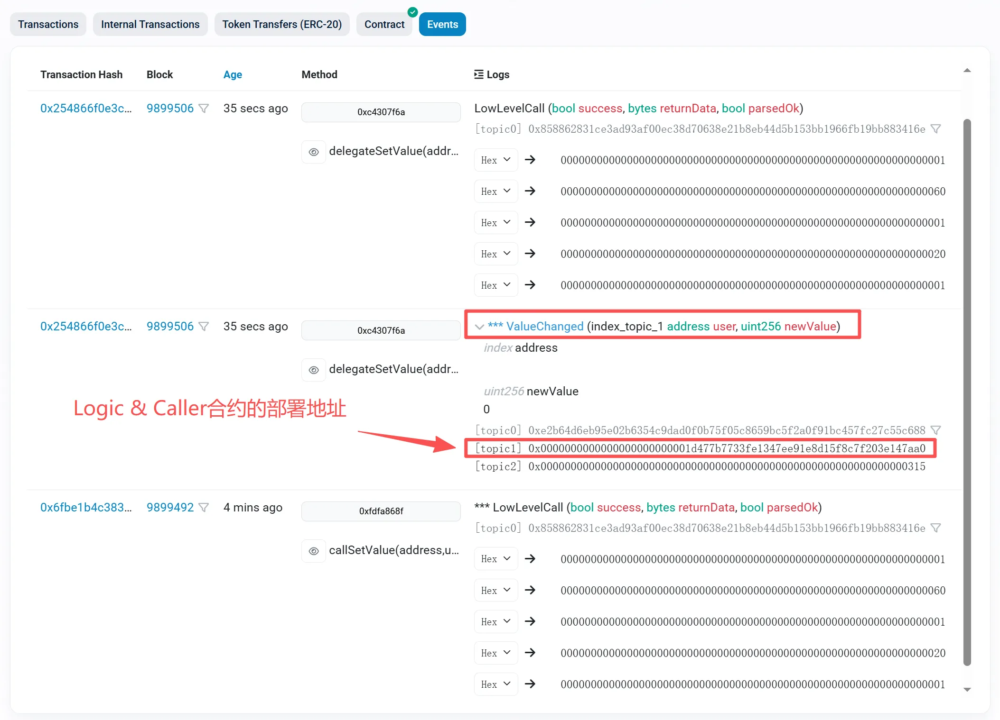

Solidity 代理合约与可升级合约系列（一）：为什么需要可升级？
本系列共两篇文章，将带你从零到一理解 Solidity 代理合约与可升级合约的核心原理。
引言：不可变性的两难
以太坊智能合约有一个核心特性：不可变性（Immutability）。一旦部署，合约的字节码就无法修改。
这是一把双刃剑：
- 优点：用户可以信任合约逻辑不会被篡改，这是去中心化和安全性的基石
- 缺点：如果合约存在 bug 或需要新功能，开发者束手无策
想象一下：你的 DeFi 协议上线后发现了一个严重漏洞，但你无法修复它——用户资金面临风险，而你只能眼睁睁看着。
这就是为什么社区发明了代理合约（Proxy Contract）和可升级合约（Upgradeable Contract）模式。
核心思路：数据与逻辑分离
既然字节码不可变，那我们换个思路：把数据和逻辑分开存储。
┌──────────────────────┐ ┌──────────────────────┐
│ Proxy │ │ Implementation │
│ (代理合约) │ │ (逻辑合约) │
│ │ delegatecall │ │
│ - 存储状态变量 │ ────────────────► │ - 存储业务逻辑 │
│ - 地址不变 │ │ - 可被替换 │
└──────────────────────┘ └──────────────────────┘
用户始终与代理合约交互，代理合约负责： 1. 保存所有状态数据 2. 将函数调用转发给逻辑合约执行
当需要升级时，只需部署新的逻辑合约，然后更新代理合约中保存的逻辑合约地址即可。用户无需迁移，地址不变，数据保留。
delegatecall：代理模式的基石
要理解代理合约，必须先理解 delegatecall。
delegatecall 与 call 类似，是 Solidity 中地址类型的低级成员函数，delegate 是委托/代表的意思。
delegatecall 的本质：借用目标合约的代码，在自己的环境中执行。
想象一下：你请了一位厨师（逻辑合约）来你家（代理合约）做饭。厨师用的是你家的厨房、你家的食材、你家的餐具。做完饭后，食物留在你家，厨师离开。
基本形式：
(bool success, bytes memory returnData) = implementation.delegatecall(calldata)
这行代码做了什么？
- 取
implementation地址上的代码（runtime bytecode） - 用你提供的
calldata作为输入 - 在当前合约的上下文中执行那段代码
- 返回执行是否成功
success与返回数据returnData
「当前合约的上下文」具体指什么？
- 写入/读取的
storage是当前合约的storage address(this)是当前合约地址balance也是当前合约的余额- 事件
emit的发出者地址（log 的 address）也是当前合约
call vs delegatecall 对比
| call | delegatecall | |
|---|---|---|
| 代码执行位置 | 被调用合约 | 调用方（即当前合约） |
| 存储修改位置 | 被调用合约的 storage | 调用方（即当前合约）的 storage |
| msg.sender | 调用方（即当前合约）地址 | 原始外部调用者 |
| msg.value | 会把 value 转给目标（如果设置 {value: ...}） |
不会把 ETH 转到实现合约；value 仍在当前合约，但实现代码能"看到"这笔 msg.value |
| address(this) | 被调用合约地址 | 调用方（即当前合约）地址 |
| 事件 emitter 地址 | 被调用合约地址 | 调用方（即当前合约）地址 |
动手实验：验证 call 与 delegatecall 的区别
下面的实验将验证： - call：修改的是被调用合约（Logic）的存储，事件从 Logic 发出 - delegatecall：修改的是调用方（Caller）的存储，事件从 Caller 发出
Logic.sol - 被调用的逻辑合约：
// SPDX-License-Identifier: MIT
pragma solidity ^0.8.28;
contract Logic {
uint256 public value;
event ValueChanged(address indexed caller, uint256 indexed newValue);
function setValue(uint256 newValue) external returns (bool) {
value = newValue;
emit ValueChanged(msg.sender, value);
return true;
}
}
Caller.sol - 发起调用的合约：
// SPDX-License-Identifier: MIT
pragma solidity ^0.8.28;
import "./Logic.sol";
contract Caller {
uint256 public value;
event LowLevelCall(bool success, bytes returnData, bool parsedOk);
function callSetValue(address logic, uint256 _value) external {
(bool success, bytes memory returnData) = logic.call(
abi.encodeCall(Logic.setValue, (_value))
);
bool parsedOk = _parseBoolReturn(success, returnData);
emit LowLevelCall(success, returnData, parsedOk);
require(parsedOk, "Call failed");
}
function delegateSetValue(address logic, uint256 _value) external {
(bool success, bytes memory returnData) = logic.delegatecall(
abi.encodeCall(Logic.setValue, (_value))
);
bool parsedOk = _parseBoolReturn(success, returnData);
emit LowLevelCall(success, returnData, parsedOk);
require(parsedOk, "Delegatecall failed");
}
/// @dev 兼容两类返回：
/// - 无返回值：returnData.length == 0，但 success == true
/// - 返回 bool：returnData 编码了 bool（32 bytes）
/// 注意：如果目标函数返回的是其他类型（例如 uint256），这里不适用。
function _parseBoolReturn(bool success, bytes memory returnData) internal pure returns (bool) {
if (!success) return false;
// 目标函数没有返回值的常见情况：成功时 returnData 为空
if (returnData.length == 0) return true;
// 如果确实返回了数据，且长度符合 bool ABI 编码（32 bytes），尝试 decode
if (returnData.length == 32) {
return abi.decode(returnData, (bool));
}
// 其他长度：无法按 bool 解析，保守处理为失败（也可以选择直接 return true）
return false;
}
}
实验步骤：
- 部署 Logic 合约，调用
setValue(123)，此时Logic.value = 123 - 部署 Caller 合约
- 调用
Caller.callSetValue(Logic地址, 456) - 调用
Caller.delegateSetValue(Logic地址, 789)
预期结果：
| 操作 | Logic.value | Caller.value | ValueChanged 事件来源 |
|---|---|---|---|
| 初始 | 123 | 0 | - |
| callSetValue(456) | 456 | 0 | Logic 合约 |
| delegateSetValue(789) | 456（不变） | 789 | Caller 合约 |
以下是某次实验的部署信息：
- 部署者地址：0x1d477b7733Fe1347eE91e8D15f8c7f203E147AA0
- Logic 合约地址：0x6e84C52c6fE239AB2288C07cA2E5b4bF09fBD894
- Caller 合约地址：0xcCe7de7ae33b8C5721e5777f0237D273111F7F2a
调用 callSetValue 后，Logic.value 变成 456，事件从 Logic 合约发出：

来源：https://sepolia.etherscan.io/address/0x6e84c52c6fe239ab2288c07ca2e5b4bf09fbd894#events
调用 delegateSetValue 后，Logic.value 不变，但 Caller.value 变成 789，事件从 Caller 合约发出：

来源：https://sepolia.etherscan.io/address/0xcce7de7ae33b8c5721e5777f0237d273111f7f2a#events
存储槽冲突：一个灾难性的 bug
delegatecall 有一个关键细节：它按存储槽位置操作，而非变量名称。
看这个有问题的例子：
contract Called {
uint256 public number; // slot 0
function increment() public {
number++;
}
}
contract Caller {
address public implementation; // slot 0 ← 危险！
uint256 public myNumber; // slot 1
function callIncrement() public {
implementation.delegatecall(
abi.encodeWithSignature("increment()")
);
}
}
问题在于：Called.number 和 Caller.implementation 都在 slot 0。
当执行 increment() 时，它会递增 slot 0 的值——但在 Caller 中，slot 0 存储的是 implementation 地址，而不是 myNumber！
结果：逻辑合约地址被意外修改，代理合约可能彻底损坏。
存储槽的本质
EVM 的存储是一个巨大的 key-value 映射：
- key：0 到 2²⁵⁶-1 的整数（存储槽编号）
- value：32 字节的数据

Solidity 编译器默认从 slot 0 开始分配变量，这就是冲突的根源。
解决方案：EIP-1967
核心思想：把代理合约的关键变量放到「不可能冲突」的位置。
2²⁵⁶ 是一个天文数字，如果我们随机选一个槽位，实现合约几乎不可能碰巧用到同一个槽。
EIP-1967 定义了两个特殊槽位：
// 逻辑合约地址存储槽
bytes32 constant IMPLEMENTATION_SLOT =
bytes32(uint256(keccak256("eip1967.proxy.implementation")) - 1);
// = 0x360894a13ba1a3210667c828492db98dca3e2076cc3735a920a3ca505d382bbc
// 管理员地址存储槽
bytes32 constant ADMIN_SLOT =
bytes32(uint256(keccak256("eip1967.proxy.admin")) - 1);
// = 0xb53127684a568b3173ae13b9f8a6016e243e63b6e8ee1178d6a717850b5d6103
为什么要减 1？
keccak256("...") - 1 的设计很巧妙：
keccak256生成伪随机数- 减 1 使得结果没有已知的哈希原像
这意味着没有任何合约能通过 Solidity 的正常语法「算出」这个槽位——除非故意硬编码。
EIP-1967 只规定了两件事：
- 关键变量存在哪里
- 变量变化时发出什么事件
它不规定：谁能修改这些变量、如何升级合约、如何处理函数选择器冲突。这些问题由其他标准解决（透明代理、UUPS 等）。
Etherscan 如何识别代理？
当 Etherscan 检测到合约在 EIP-1967 槽位存有非零值时，它会：
- 标记该合约为代理合约
- 显示实现合约地址
- 提供「Read as Proxy」和「Write as Proxy」选项
这就是 EIP-1967 带来的标准化好处——工具链可以自动识别代理模式。
一个最简代理合约
理解了原理，我们来看一个基础实现：
SimpleProxy.sol：
// SPDX-License-Identifier: MIT
pragma solidity ^0.8.20;
contract SimpleProxy {
bytes32 private constant IMPLEMENTATION_SLOT =
0x360894a13ba1a3210667c828492db98dca3e2076cc3735a920a3ca505d382bbc;
constructor(address _implementation) {
assembly {
sstore(IMPLEMENTATION_SLOT, _implementation)
}
}
fallback(bytes calldata data) external payable returns (bytes memory) {
address impl;
assembly {
impl := sload(IMPLEMENTATION_SLOT)
}
(bool success, bytes memory result) = impl.delegatecall(data);
require(success, "Delegatecall failed");
return result;
}
}
User.sol - 模拟用户调用流程核心代码：
// SPDX-License-Identifier: MIT
pragma solidity ^0.8.28;
/// @notice 用 Logic 的 ABI 去调用 Proxy
interface ILogic {
function setValue(uint256 newValue) external returns (bool);
function value() external view returns (uint256);
}
/// @notice 模拟完整的代理调用流程
contract User {
/// @notice 演示：用户 -> Proxy -> delegatecall -> Logic 代码 -> 写 Proxy 存储
function demo(address proxy, address logic, uint256 newValue)
public
returns (uint256 proxyValue, uint256 logicValue, bool success)
{
// 通过 Proxy 调用 setValue（会触发 fallback -> delegatecall）
success = ILogic(proxy).setValue(newValue);
// 读取 Proxy 的 value（delegatecall 写入的是 Proxy 的存储）
proxyValue = ILogic(proxy).value();
// 对比 Logic 自身的 value（应该不变）
logicValue = ILogic(logic).value();
}
}
完整代码地址：最简代理合约演示程序
工作流程：
- 用户调用代理合约的某个函数（如
setValue()） - 代理合约没有这个函数，触发
fallback fallback从 EIP-1967 存储槽读取逻辑合约地址- 使用
delegatecall将调用转发给逻辑合约 - 逻辑合约的代码在代理合约的存储上执行
小结
本篇我们介绍了：
- 为什么需要可升级合约：平衡不可变性与可维护性
- delegatecall 的工作原理：借用代码，本地执行
- 存储槽冲突问题：以及 EIP-1967 的解决方案
- 最简代理合约：基础实现框架
但这个简单实现还有一个严重问题：函数选择器冲突（Function Selector Clash）。
举个例子：如果代理合约有一个 upgrade() 函数用于升级，而逻辑合约恰好也有业务函数叫 upgrade()，会发生什么？用户调用时，EVM 会优先匹配代理合约的函数，逻辑合约的同名函数将永远无法被调用！
下一篇，我们将深入探讨两大主流代理模式：透明代理（Transparent Proxy）和 UUPS，看它们如何优雅地解决这个问题。
系列导航
- 第一篇：Solidity 代理合约与可升级合约系列（一）：为什么需要可升级？（本篇）
- 第二篇：Solidity 代理合约与可升级合约系列（二）：透明代理 vs UUPS